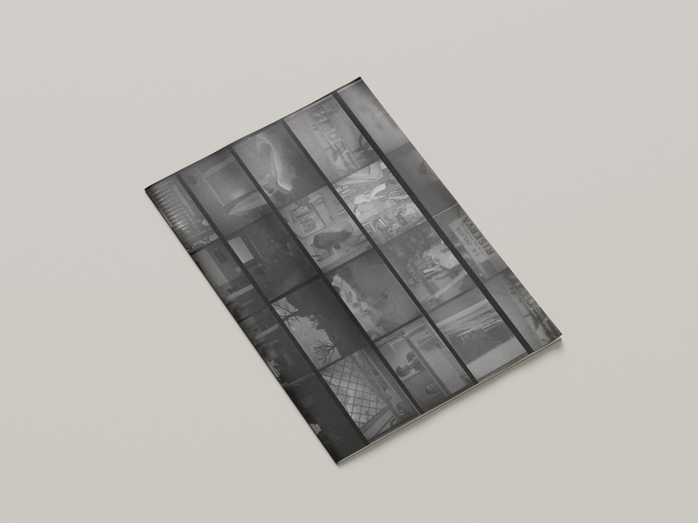
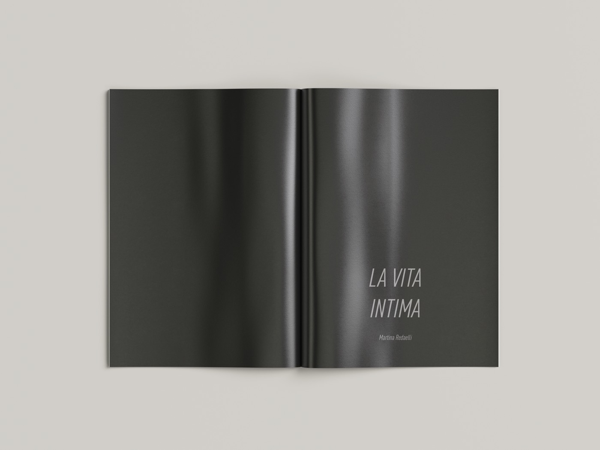
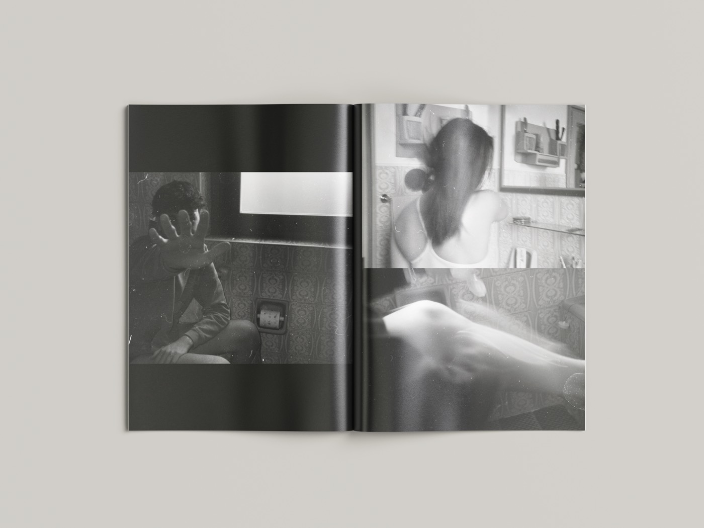
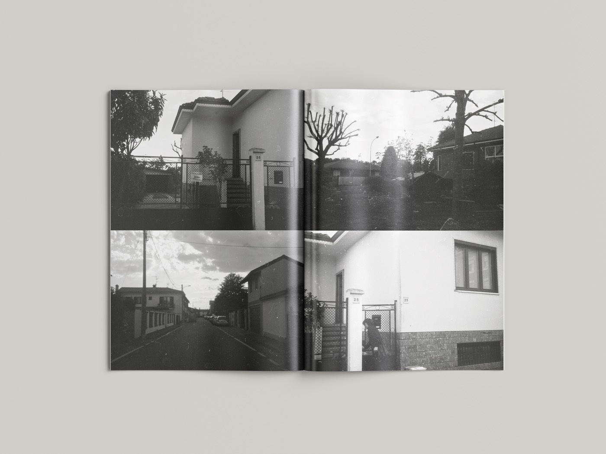
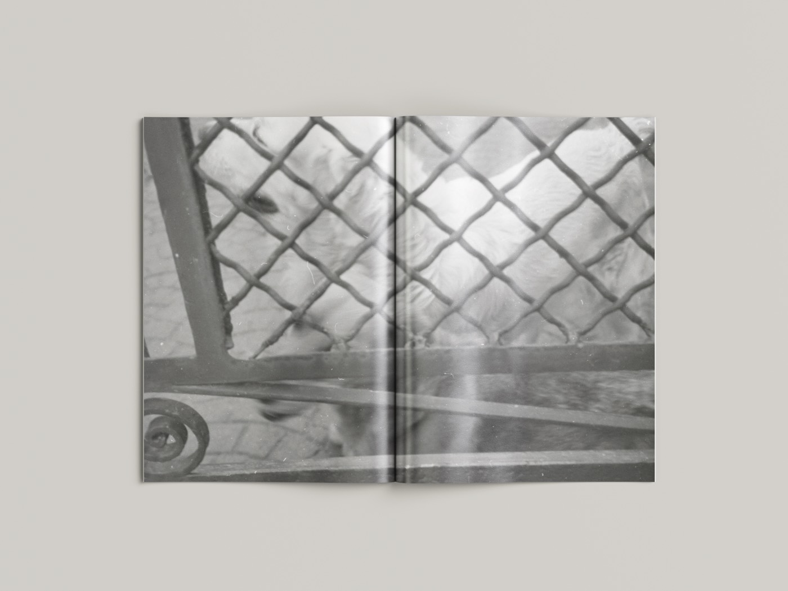
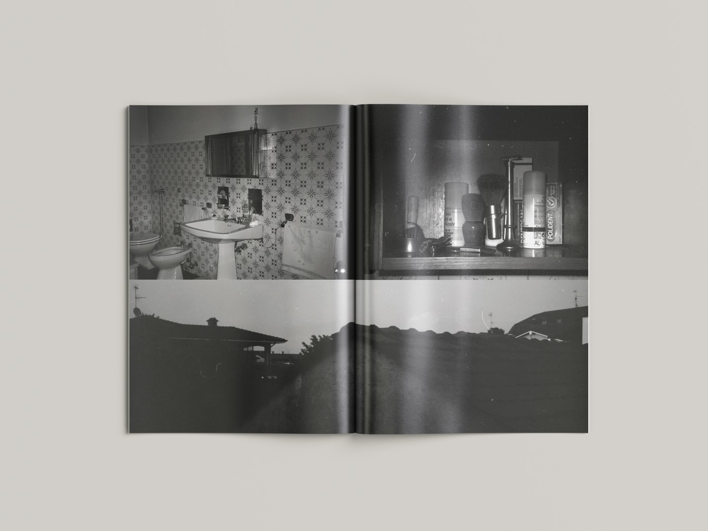
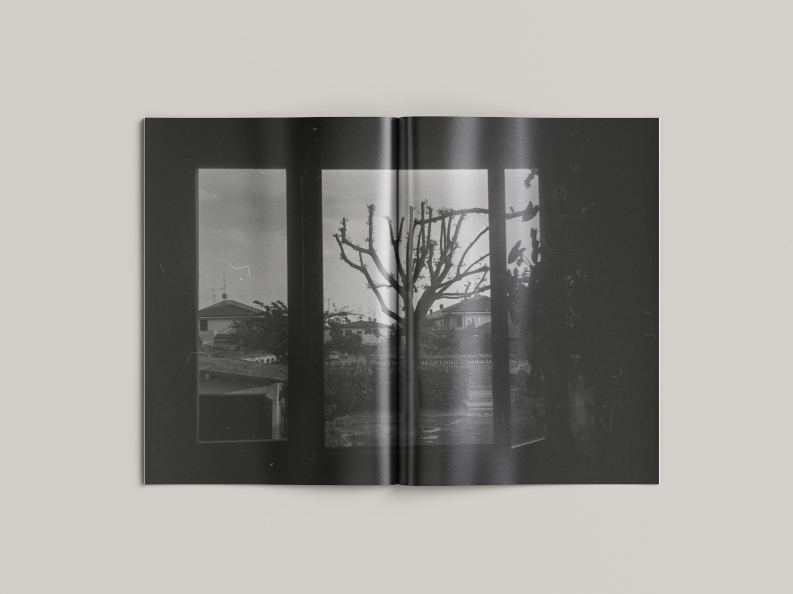
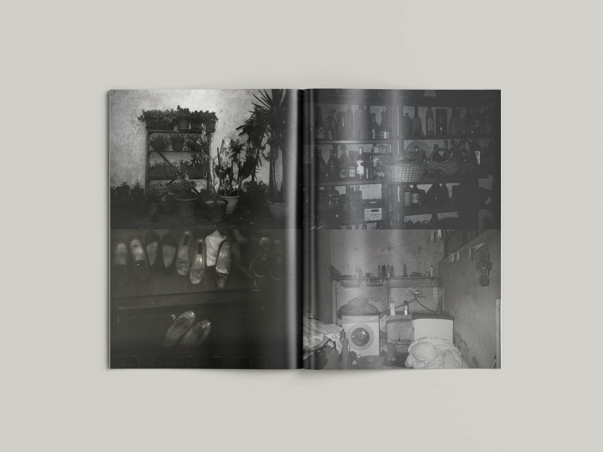
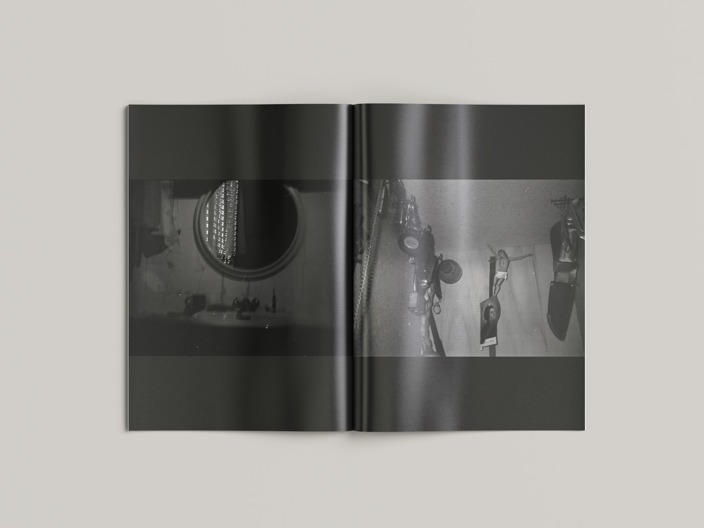
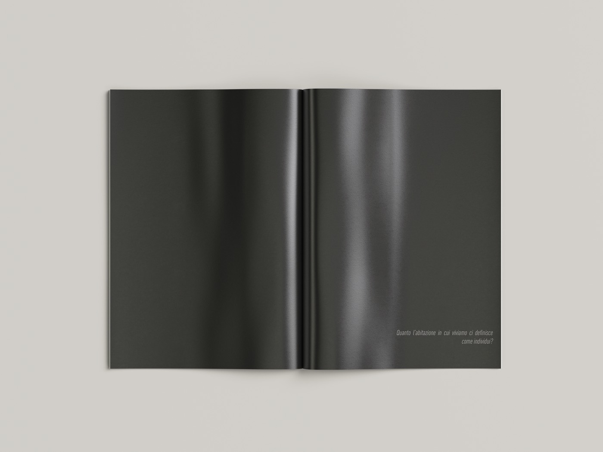

La Vita Intima
- Fanzine
- Black and white analog photography
La Vita Intima is a photographic research project taking the form of a fanzine, exploring the most hidden sides of private life, starting from the domestic environment. What can be found in kitchen cupboards, among the clutter in a cellar, in the cabinet above the bathroom sink? What are the gestures we perform every day but keep away from others' eyes — not out of shame, but because they belong to a sphere too personal to be shared?
How much can you understand about a person from their home?
How much does the home we live in define us as individuals?









